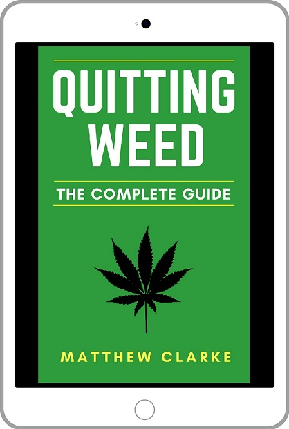
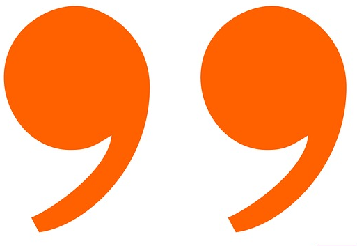

Is it time you left cannabis behind?
Are you struggling to overcome your marijuana addiction? It's okay. It's not as easy as everyone makes out.
Just as there are responsible drinkers and alcoholics, there are those who can moderate their cannabis use and those who cannot. Quitting Weed: The Complete Guide is the definitive book on overcoming cannabis addiction.
A former addict himself, Matthew Clarke provides an easy-to-follow, comprehensive guide for understanding how cannabis addiction works, and most importantly, detailed advice on how to conquer addiction – permanently. If you are struggling to quit and you want to learn how to quit successfully, this book is for you – you'll never look at cannabis the same way again.


Also available on Kobo, iBooks,and Barnes and Nobles via Smashwords
Book Features
what you will learn
Science of Addiction
Understand the science and psychology that drives your addiction
Withdrawal symptoms
Understand cannabis withdrawal symptoms and how to best treat them
Perspective
Learn to view your habit and the drug in a different light, through reflecting on your use
Obstacles
Understand how to overcome the obstacles to sobriety – mental gymnastics, social pressure, boredom, nostalgia
Awareness
Know what to expect during the quitting process – relapses, self-doubt, emotional ups and downs
Preparation
Learn strategies and tips for maximising your chances of success
Mindset
Discover the knowledge and approaches necessary for maintaining long-term sobriety
Motivation
Have a selection of cannabis-specific motivational quotes and reflections to consult when struggling
Reviews
read what others think
Clear, concise, and profound. This book is a gem.
I found this book to be incredibly helpful, filled with wisdom and knowledge that spoke directly to me and my situation. The author captured exactly what was going on with my addiction and provided great, practice, and straight forward advice. The text is clear, concise and has no crappy filler content that I find in most books on similar topics.
SnowPeople
This book from the first few pages made me feel I wasn't alone.
Highly recommended by someone who thought they'd never escape the tyranny of the weed.
Kathleen B.
I do not smoke weed and never have but I was very concerned about my sons one of which is suffering badly from smoking it although he is still in denial. So I decided to read up on what it is like to quit and how to quit. Matthew's book has really boosted my confidence about what is involved and how to go about it to the point where I feel what I have learned and how I talk to my sons about the subject has got them questioning their own use and cutting down.
The book is very readable, not too long and drawn out but clear concise and informative. Perfectly structured and enlightening too. I now feel equipped to handle what my sons are doing and on helping them exit when that comes....and it will.
Giles R.
This book covers everything. Unfortunately this area of addiction is often overlooked or downplayed. I learned some things I didn't know.
There's no judgment here, just a straightforward guide to understanding what is happening with your body and brain on this drug. If you don't have a problem with weed, or it is even beneficial to you that is totally cool, but that is not the case for some.
Sadly for myself and others it has become a toxic influence. There is no shame in becoming addicted to an addictive substance, if this happens to resonate with you ( I mean you are looking into a book specifically about quitting weed and reading reviews for it 😅) I definitely recommend it, as it will walk you through the process of understanding why this stuff is causing problems for you, what to expect when you quit, and how to recognize, and even hopefully prevent an oncoming relapse.
Mimi
I’ve been thinking about quitting weed for a few months, and this book really opened up my eyes to how important it is that I actually do it. It talks about the science behind the addiction and provides honest and humbling thoughts/phrases to remember during your journey to sobriety to help you stay on track (which was always the hardest part for me).
Michelle M.
An excellent, well-organized, and clearly written manual for quitting marijuana addiction. If you or a loved one has this problem, this book is an excellent place to start.
Glenn V.
I am a child and adolescent psychologist and this book is the best resource I have found to address marajuana addiction. I see so many unhappy, underachieving youth who are trapped in a terrible cyle with this substance. The author clearly explains the problems chronic users face while weaving in research and resources. He also provides a lot of encouagement for those toying with quitting. I will recommend this book to any family I meet who is dealing with this challenge.
Katherine Q.
This book is right on point. Clearly the author knows what he’s talking about. Good for anyone at any point of their journey. Learned even more reasons why I needed to do this. Easy to read.
SM
Chapter Overviews
book contents
Chapter 1:
The Invisible Chains
The Slow Descent into Addiction | Cannabis Abuse in Perspective | Overcoming the Stigma of Addiction
PreviewChapter 2:
Analysing Your Habit
Opportunity Costs | The "Benefits" of Weed | The Costs of Weed Use
PreviewChapter 3:
The Science of Cannabis Addiction
Defining addiction | Your Brain's Reward System | How Cannabis Works | Frying Your Reward Circuitry | Cheating Your Reward System.
PreviewChapter 4:
The Psychology of Addiction
What Addiction Represents | Addiction and Other Self-Destructive Behaviours | Childhood Roots of Addiction | Toxic Shame | Other Contributing Factors
PreviewChapter 5:
The Quitting Process
Quitting Is a Process, Not a Single Event | The Stages of Quitting | Why Quitting is Difficult | Quitting and Willpower | The Return to Reality | Withdrawal Symptoms
PreviewChapter 6:
Quitting Advice and Strategies
New Habits, New Life | Recommended Activities | Essential Quitting Tips
PreviewChapter 7:
Relapses, Obstacles and Mental Gymnastics
The Slippery Slope of Relapse | How to Approach Relapses | Triggers | Emergency Relapse Prevention Strategies | The Pink Cloud | Obstacles to Quitting | Mental Gymnastics
PreviewChapter 8:
The Quitting Mindset
The Quitting Mindset | Recognising Progress | Restructuring Your Beliefs | Building a New Life | Healthy Expectations | How Will I Know I Have Truly Quit? | Will I Ever Smoke Again?
PreviewAppendix:
Recovery Experiences
Hear from others who have successfully quit or are currently in the process
Excerpts
reading samples
-
Chapter 1: The Invisible Chains˅
Chapter 1: The Invisible Chains
“Addictions ... started out like magical pets, pocket monsters. They did extraordinary tricks, showed you things you hadn't seen, were fun. But came, through some gradual dire alchemy, to make decisions for you. Eventually, they were making your most crucial life-decisions. And they were ... less intelligent than goldfish.”
William Gibson
The Sedated Life
You wake up, your head feels groggy. You have little energy. After forcing yourself to get up, within an hour, you have a smoke.
You slowly go about your day. Maybe you work, maybe you don’t. Conversation is difficult; you are unable to look people in the eye, unable to even string a coherent sentence together. You feel ashamed that you have little-to-no social skills. You never laugh or smile anymore; you seem to be in a permanent state of numbness. All you are concerned about is looking towards the next high, even though each subsequent high of the day is less and less effective at making you feel ok.
Evening rolls around, and once again you find yourself in front the TV or computer, numbing and distracting yourself further. You gorge yourself on take-away food and unhealthy snacks. Any tasks or jobs you had planned have been left for another day.
This terrible cycle continues day in, day out. You alternate between momentarily feeling good, before returning to that familiar state: lethargic, fuzzy, empty, numb, and above all, unhappy with life. Each day, you find that a little part of you dies; each day, you get slightly further away from your real self.
Sometimes, you wonder if there is another life out there, away from the weed, away from the lonely, monotonous existence that your life has become. For a brief moment, you stop pretending that life is all good, and you begin to gaze upon the reality you have been blinding yourself to: you have neglected your life.
You have traded in real growth and development in favour of a meaningless, artificial euphoria, kidding yourself that all is fine, when the reality is anything but. As the discomfort of this truth starts to set in, your brain persuades you why you should continue to smoke: it helps open your mind, it’s a social activity, it helps you be creative, it helps take the edge off the futility of life, it’s harmless, everyone does it, it’s not heroin, and so on, and so on.
You reach for your stash box once again. The cycle continues.
There must be more to life than this. There is.
end of preview -
Chapter 2: Analysing Your Habit˅
Chapter 2: Analysing Your Habit
“Everything you want in life has a price connected to it. There’s a price to pay if you want to make things better, a price to pay just for leaving things as they are, a price for everything.”
Harry Browne
Having become so de-sensitized to our use, many of us are not fully aware of the damage our addiction causes. When we honestly consider the true cost of our cannabis use, we strengthen our commitment to quitting.
This chapter will encourage you to open your eyes to the reality of your addiction and the impact it has on your life. Here, in black and white, we will consider what our habit really costs us – not just in terms of money, but everything else that we give up in the process.
To assess the impact cannabis has on our lives, we will firstly consider the opportunity costs of our use. Then, we will take an in-depth look at the costs and “benefits” of our weed use. At the end of the chapter, it should be clear just how devastating your habit truly is.
From this point on, we must be honest with ourselves: if we are going to be successful, we must be absolutely clear about the reality of our use. Just as buildings need foundations, we need strong foundations to build our sobriety upon. Denying or minimizing the reality of addiction risks the entire quitting process.
Opportunity Costs
An opportunity cost refers to the opportunities we lose when we choose one particular option.
When we have the choice between two or more things, where we can only choose one, picking one results in losing the ability to choose the other. This is an incredibly powerful concept. By choosing to use cannabis, you close the door on other opportunities.
end of preview -
Chapter 3: The Science of Cannabis Addiction˅
......this shortcut to pleasure has a major neurological consequence: dopamine deregulation. To counter the continual flood of dopamine, the brain reduces the number of dopamine receptors, so it doesn’t get overwhelmed by all the dopamine floating around. This process – called “blunting” – results in decreased motivation, impaired memory, mood swings, and a host of other problems.
These effects were brilliantly illustrated by a study conducted by Nora D. Volkow. In the experiment, cannabis users were given methylphenidate (aka Ritalin) alongside non-users. The stimulant provided a huge increase in dopamine. Interestingly, both groups received the dopamine boost; however, whereas the non-users reported an increased heart rate, felt restless, and stimulated, the heavy cannabis users barely experienced any effects of the Ritalin – evidence of a blunted reward system. Volkow was so surprised by this that she double-checked the drug hadn’t passed its expiry date.
The frying of your reward circuitry – the reduction in sensitivity to dopamine – manifests itself in a variety of negative ways. Here is a list of potential symptoms of low levels of dopamine, many of which will sound familiar:
- Fatigue
- Anhedonia (inability to feel pleasure)
- Lack of motivation and drive
- Insomnia
- Inability to concentrate
- Anxiety
- Emotional numbness
- Social withdrawal
- Mood swings
- Forgetfulness
- Depression
- Indecisiveness
- Craving for stimulants
- Craving for sugar/saturated fats
Reading that list may be a real revelation. The effect cannabis has on our reward system is massive. This is the price we have paid for the years of heavy use.
end of preview -
Chapter 4: The Psychology of Addiction˅
Chapter 4: The Psychology of Addiction
“At first, addiction is maintained by pleasure, but the intensity of this pleasure gradually diminishes, and the addiction is then maintained by the avoidance of pain.”
Frank Tallis
Why are we so drawn to weed in the first place?
Why are some people addicted to cannabis, whilst others have no trouble moderating their use?
Why do we continue to smoke even when we want to stop?
Having looked at the physiology of cannabis addiction on the body and brain, it is time to explore the deeper psychological motivations at play. Knowing why you are addicted will help to increase your self-awareness, which will improve your chances of success.
In this chapter, we aim to understand the root causes behind our addiction. We will begin by exploring what our cannabis abuse represents, considering its role as an emotional crutch. Next, we’ll consider addiction in relation to other self-destructive behaviours and attitudes you may have. We will then reflect on the possible origins of addiction within our childhood and adolescent years. The final part of the chapter will identify other contributing forces that motivate us to continue smoking.
What Addiction Represents
Cannabis addiction is a symptom, often part of a broader pattern of self-neglect. The broad, underlying factor behind addiction is the inability to deal with negative emotions.
Self-regulation is the ability to handle your emotions and behaviour. Self-regulation is the ability to act in your long-term best interests, responding to your emotions in healthy, positive ways. It is the ability to accept and tolerate uncomfortable thoughts and feelings, instead of trying to avoid them.
end of preview -
Chapter 5: The Quitting Process˅
Why Quitting is Difficult
To state the obvious, if quitting were easy, we would have done it already.
The main reason we struggle to leave cannabis behind is because, from years of daily smoking, we have developed very strong emotional and physiological bonds to it.
Addiction is a heavily reinforced habit. Habits are, by definition, hard to break. When we consider how long we have been smoking for, and the powerful motives behind our use, it is easy to see why some of us struggle to quit.
Chemically, our brains crave the dopamine surge cannabis delivers. The brain’s reward system has been over-stimulated, with noticeable consequences. We may also be self-medicating for depression, anxiety, or other mental health issues.
Spiritually, weed has become part of our identity. It has been a daily habit for many months and years. It has been an escape – a sort of sanctuary from the responsibility and pressures of life.
Emotionally, our minds crave the sense of comfort and the emotional numbness weed provides. We have used it as a crutch to cope with our emotions, depending up on it to numb and suppress uncomfortable thoughts and realities.
Socially, we fear losing friends and a sense of belonging. We struggle to imagine life without it.
Emotionally, our minds crave the sense of comfort and the emotional numbness weed provides. We have used it as a crutch to cope with our emotions, depending up on it to numb and suppress uncomfortable thoughts and realities.
Quitting and Willpower
Contrary to the empty promises of some self-help books, quitting does require some willpower.
Some claim quitting is easy and doesn’t require any willpower at all. These individuals are woefully uninformed about the nature of addiction and recovery, and are often in denial of their own addiction. Others over-emphasize willpower’s importance, insisting that if you haven’t already managed to quit, then you aren’t trying hard enough. These two views both underplay and overplay its significance.
end of preview -
Chapter 6: Quitting Advice and Strategies˅
Chapter 6: Quitting Advice and Strategies
“If you fail to plan, you are planning to fail.”
Benjamin Franklin
Quitting successfully requires a plan. Without a plan, you are unnecessarily prolonging your pain, as well as jeopardizing the entire quitting process. Successfully quitting requires both anticipating the pitfalls and obstacles along the way (which is what we have covered so far) and having a solid quitting plan.
This chapter outlines the best ways to maximize your quitting chances by offering advice and strategies for quitting. We will firstly outline the central key to quitting – habit replacement – before exploring what sort of activities are most beneficial. Then, we will consider other effective strategies and essential preventative measures, such as joining support groups and deleting dealer contacts.
New Habits, New Life
Quitting weed creates a huge hole in your life. You must fill this with new habits. Adopting healthy new habits is the key to overcoming addiction.
Here’s the big secret: the best way to beat your addiction is to wholeheartedly focus on building yourself a new life.
There are two reasons for this.
Firstly, weed addiction is a symptom of a deeper dissatisfaction with life. Quitting removes the numbing effect of weed on your life, exposing you to reality – the reality you have been avoiding. This is why it is so important to build a mentally and physically healthier life by embracing new habits. If you do nothing to change the circumstances that drive you towards weed use, relapse is almost certain.
Secondly, quitting frees up huge amounts of time. If you are sitting around bored, sooner or later, you will start thinking about smoking, and eventually, you will convince yourself to give in. Fighting boredom drains your willpower and makes quitting much more difficult.
end of preview -
Chapter 7: Relapses, Obstacles and Mental Gymnastics˅
The Slippery Slope of Relapse
When quitting, if you give in and smoke, you have “relapsed.”
There are two kinds of relapse: minor and major.
Minor relapses are those where you smoke just a little, before going back to quitting no problem – just a small blip in multiple weeks of sobriety.
Major relapses are where you continue smoking and put quitting on hold for the foreseeable future, and before you know it, another a week, month, or year has passed.
Every minor relapse carries the risk of a major relapse – undoing any progress you have made and risking the entire quitting process. You think one last time won’t hurt, but before you know it, a minor relapse has become a major relapse. Depression returns, as does the lethargy and brain fog.
Therefore, as soon as you smoke, you are taking a huge gamble. It is a very slippery slope from a small relapse to a full-blown major relapse – one where you spend another month to a year smoking away your time, money, and energy.
How to Approach Relapses
Relapses happen. However, every relapse is a learning opportunity.
Each relapse reveals your relationship with weed more clearly. The cycle starts to become familiar: the craving and giving in; the lacklustre high; the depression, paranoia, and anxiety; the panic when you begin to near the end of your supply; the shame and self-loathing once it’s all over.
Relapses must be treated seriously, but you must also keep things in perspective. Although it is natural to feel guilty and ashamed, this can easily keep you trapped in a cycle of relapsing. The delicate balance is in not being too hard on yourself, but not too easy either. Remind yourself that relapsing is a result of the primitive part of your brain craving the drug, even though the rational part of your brain has decided you need to quit.
end of preview -
Chapter 8: The Quitting Mindset˅
The Quitting Mindset
Quitting cannabis will be much easier if we practice looking at things from a constructive mindset. If you are serious about quitting, embrace the following attitudes:
1) Self-Compassion
Be kind to yourself. Take care of yourself by engaging in nourishing activities.
If you mess up or relapse, don’t beat yourself up. Being too tough on yourself causes a negative cycle of shame, anger and frustration that only serves to keep you stuck in the cycle of addiction. On the other hand, don’t treat it like it doesn’t matter! Minor relapses are not the end of the world – just make sure they don’t turn into major ones.
In moments of struggle, don’t shame yourself for not being good enough or not trying hard enough.
Avoid negative self-talk. Instead, acknowledge that quitting is difficult, and remind yourself that it is okay to struggle. Not everything in life can be easy; to expect otherwise is setting yourself up for frustration and disappointment. Overcoming addiction is supposed to be difficult. Think about it: if it were easy to quit, no one would be addicted in the first place.
Consider how many millions of addicts there are worldwide, stuck, completely in denial. You are entering the arena; you are stepping into the ring, ready to fight the ogre of addiction. You have the self-awareness and determination to face up to your biggest weakness, which deserves serious respect.
Stop treating yourself so harshly and start treating yourself with kindness and compassion – you deserve it.
2) Acceptance
You must accept that weed has no longer has a place in your life.
You must accept that you cannot control your weed use.
Failure to accept either of these truths will eventually cause you to relapse.
You must also accept the damage you have done to your brain – your brain’s reward system is fried. To heal your broken brain, complete abstinence from weed is required. There is no other option.
The choice is simple: either you continue to use weed, and continue a life of quiet desperation, inner emptiness, shame, and worry, never finding out your potential; or, you break free from the green prison and transform your life into something unrecognisable from your current situation – one where you are motivated, alive, and in touch with your emotions.
If you fail to accept your situation, relapse is certain, and you risk losing another year or more of your life.
end of preview -
Chapter 9: The Motivation Chapter˅
The Benefits of Sobriety
1) Energy
One of the most far-reaching benefits of living the weed-free life is the amount of energy you unleash.
Having gotten used to your slow, tired way of living, you have long forgotten what having real energy and drive felt like. You may have never considered that weed was responsible.
Until you experience this surge in energy, you may find it hard to believe – it really is staggering. Through the combination of a new attitude, a healthier reward system, momentum, and increasing confidence, quitting weed is hugely stimulating. When you experience these things again for the first time in a long time, it feels like a new lease on life.
Other potential benefits include the ability to wake up easily and get by with less sleep. You may think that struggling to get out of bed is just who you are. However, without weed interfering with your sleep and energy levels, after a few weeks of sobriety, you may find getting up is easy – no more rushing for work or wasting half the day away in bed. Also, you’ll find you need less sleep and feel more refreshed come morning. When smoking, you might get 9 or 10 hours of sleep and still feel tired; when sober, you can get by on much less and feel much livelier.
2) Time
You’ll be truly astonished by how much time is unlocked when you quit. You’ll feel like the day has doubled, tripled, or even quadrupled in length! It becomes obvious just how time you spent finding, purchasing and thinking about weed, watching TV, mindlessly browsing the web, and generally wasting time.
Having ample time takes away huge amounts of stress and pressure that you have placed on yourself through your addiction. Managing your time better, which is something weed really interferes with, goes a long way to improving your general mood and confidence. Coupled with your newfound energy, it is mind-blowing how much you can accomplish in a single day – you can manage your responsibilities much more easily, which helps reduce anxiety by making you feel more in control of your life.
Time is the currency of life. Life is short – don’t waste the gift of time having spent your life half-baked and glazed over.
3) Drive and Ambition
Remember, back when you were younger, when you had dreams and aspirations? Did they seem to get neglected – or even forgotten – as the months and years of smoking went on?
- Do you want to change careers?
- Do you want to have an impact on the world and those around you?
- Do you want to embark on further study?
- Do you want to start a business?
- Do you want to become a freelancer?
- Do you want to travel?
- Do you want to volunteer your time to a social cause?
- Do you want to stop living payday to payday?
- Do you want to buy your own home?
Whatever your aspirations are, now is the time to quit weed, regain your sense of urgency and motivation, follow through, and achieve your goals.
end of preview
Purchase
where to buy
21 Reviews Average: 4.6/5
Available at Amazon
Also available for Kobo, B & N and iBooks through Smashwords